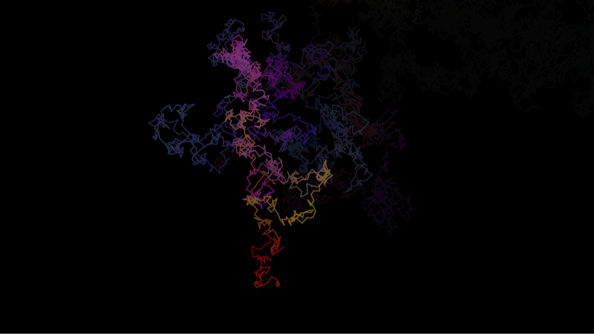
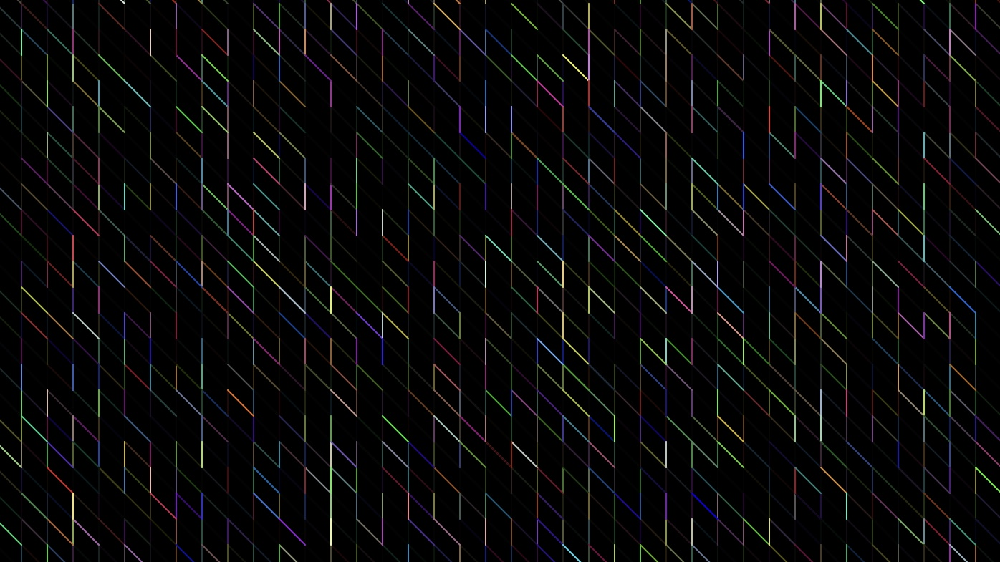
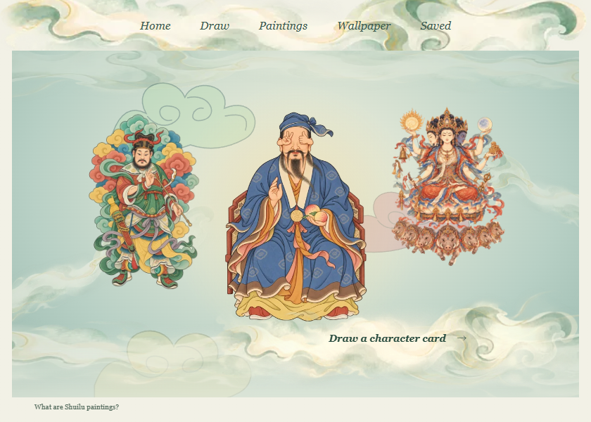
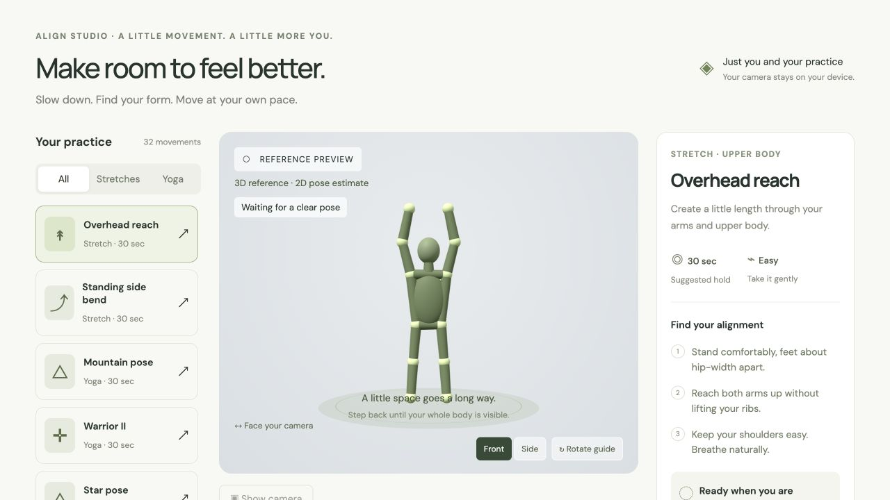

Walker.Experience randomness.
An experiment in motion and randomness, using simple code to create beautiful art.
View project
An experiment in motion and randomness, using simple code to create beautiful art.
View project
I wanted to see how very simple random rules could turn a grid of lines into engaging art.
View project
My interest in Chinese art meets technology: an experiment in bringing Shuilu paintings into the present while keeping their cultural significance in view.
View project
My interest in movement meets AI in an experiment using body-pose recognition to support safer stretching and yoga.
View projectI enjoy photography. Here’s a selection of pictures I’ve taken over the years.
View photos